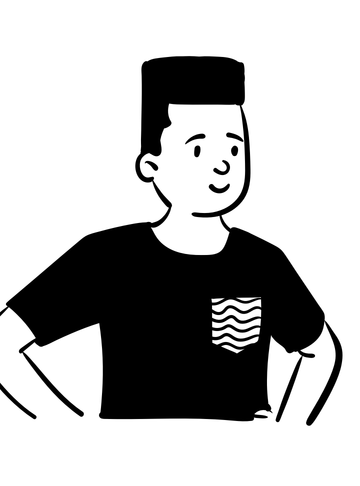

| Obs. | X | Y | X | Y | X | Y | X | Y |
|---|---|---|---|---|---|---|---|---|
| 1 | 10.00 | 8.04 | 10.00 | 9.14 | 10.00 | 7.46 | 8.00 | 6.58 |
| 2 | 8.00 | 6.95 | 8.00 | 8.14 | 8.00 | 6.77 | 8.00 | 5.76 |
| 3 | 13.00 | 7.58 | 13.00 | 8.74 | 13.00 | 12.74 | 8.00 | 7.71 |
| 4 | 9.00 | 8.81 | 9.00 | 8.77 | 9.00 | 7.11 | 8.00 | 8.84 |
| 5 | 11.00 | 8.33 | 11.00 | 9.26 | 11.00 | 7.81 | 8.00 | 8.47 |
| 6 | 14.00 | 9.96 | 14.00 | 8.10 | 14.00 | 8.84 | 8.00 | 7.04 |
| 7 | 6.00 | 7.24 | 6.00 | 6.13 | 6.00 | 6.08 | 8.00 | 5.25 |
| 8 | 4.00 | 4.26 | 4.00 | 3.10 | 4.00 | 5.39 | 19.00 | 12.50 |
| 9 | 12.00 | 10.84 | 12.00 | 9.13 | 12.00 | 8.15 | 8.00 | 5.56 |
| 10 | 7.00 | 4.82 | 7.00 | 7.26 | 7.00 | 6.42 | 8.00 | 7.91 |
| 11 | 5.00 | 5.68 | 5.00 | 4.74 | 5.00 | 5.73 | 8.00 | 6.89 |
| Mean | 9.00 | 7.50 | 9.00 | 7.50 | 9.00 | 7.50 | 9.00 | 7.50 |
| SD | 3.32 | 2.03 | 3.32 | 2.03 | 3.32 | 2.03 | 3.32 | 2.03 |
| Corr | 0.82 | 0.82 | 0.82 | 0.82 |
Visualizing Innovation
Introduction
October 9, 2023
Course info

- Matthias Schnetzer
- Vienna Chamber of Labour & WU Vienna
- mschnetz@wu.ac.at
- https://mschnetzer.github.io
- matschnetzer
- Oct 9, 2023 – Dec 18, 2023
- 10:00–12:00
- TC.3.10
- https://mschnetzer.github.io/econpolviz
Who are you?
 


What do you expect of this course? Do you already have some coding experience in R?
Feedback, cooperation and help
Let me know your feedback on the course anytime. If possible, I will try to incorporate your feedback immediately. At least, I will consider it for future courses. At the end of semester, we will have a student evaluation.
As some of you might already have advanced coding skills in R, please support each other and collaborate. This does not mean that one person does all the coding and shares with all colleagues. Students should have an intrinsic motivation to improve their coding skills but cooperate to learn from each other.
There is a forum on the learning platform for exchange among students. Please also consult support platforms like Stack Overflow or take a look at the cheatsheets:


Recommended Literature
 |
Jonathan Schwabish Better Data Visualizations: A Guide for Scholars, Researchers, and Wonks Columbia University Press ISBN-13: 9780231193115 |
 |
David Spiegelhalter The Art of Statistics: Learning from Data Penguin Books UK ISBN-13: 9780241258767 |
Data
The era of evidence in economics

The figure shows the evolution of economics literature by text mining the 500 most-cited titles in top journals by decade. There is a shift from advancing theory towards empirical evidence.
The rise of empirical articles
 |
There is a distinct rise of empirical papers in economics. In the 1980s, around one third of publications was empirical. Today, it’s more than half. This trend is present in all sub-fields of the discipline (labor, finance, macro, etc.). The analyis is based on 134,892 papers published in 80 journals between 1980 and 2015. Papers are labeled as empirical if they use data to estimate economically meaningful parameters. |
Mind the (data) gap!
The limits of data

- Data is never a perfect reflection of the world!
- It’s only a subset: not crime but reported crime
- Information is collected by humans and processed by machines: imprecisions and errors are inevitable!
- Be aware of potential (cognitive and statistical) biases!
Invisible rich
 |
Survey data are based on representative samples drawn from total population. However, the probability of drawing one of the few very rich households into the sample is infinitesimal. Moreover, participation in surveys is mostly voluntary and there is a higher refusal rate at the top. This poor coverage of the top in wealth and income surveys conceals the extent of inequality. The figure shows the gap between the richest observation in wealth survey data (HFCS) and the “poorest” observation in national rich lists created by magazines. |
Discuss with your neighbour
What other potential flaws and challenges of data collection come to your mind?
How could these flaws be tackled by the researcher?

Be aware of differences between data sources!
Why should we plot data?
Let’s start coding with the penguins

The Palmer Penguins


The data was collected from 2007-2009 by Dr. Kristen Gorman with the Palmer Station Long Term Ecological Research Program. The dataset contains data for 344 penguins. There are 3 different species of penguins, collected from 3 islands in the Palmer Archipelago, Antarctica.
Bibliography
Angel, Stefan/Disslbacher, Franziska/Humer, Stefan/Schnetzer, Matthias (2019). What did you really earn last year?: Explaining measurement error in survey income data. Journal of the Royal Statistical Society: Series A (Statistics in Society). DOI: 10.1111/rssa.12463
Angrist, Joshua/Azoulay, Pierre/Ellison, Glenn/Hill, Ryan/Lu, Susan Feng (2017). Economic research evolves: Fields and styles. American Economic Review, 107(5), 293–297. DOI: 10.1257/aer.p20171117
Brice, Brandon D./Montesinos-Yufa, Hugo M. (2019). The era of empirical evidence. Mimeo.
Disslbacher, Franziska/Ertl, Michael/List, Emanuel/Mokre, Patrick/Schnetzer, Matthias (2020). On top of the top - adjusting wealth distributions using national rich lists (Working Paper Series No. 20). INEQ.
Gorman, Kristen B./Williams, Tony D./Fraser, William R. (2014). Ecological sexual dimorphism and environmental variability within a community of antarctic penguins (genus pygoscelis). PLoS ONE, 9(3), e90081. DOI: 10.1371/journal.pone.0090081